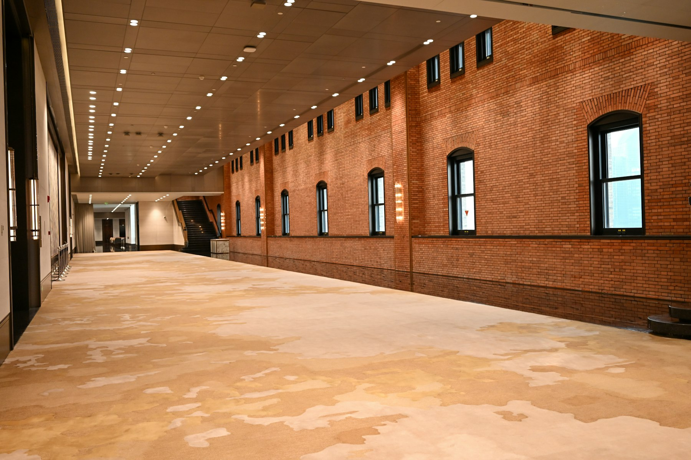

Let’s make Fastlane a company the internet can’t stop watching.
Fastlane has already done what many startups aspire to: build a product people are excited about, generate serious buzz, and turn distribution into a competitive advantage.

I've been following Fastlane for a while, and I genuinely admire what you've built and how you've approached growth.
What excites me most is the opportunity to learn from a team operating at this pace, while contributing my own experience in marketing, content, and growth.
I'd love to join Fastlane as an unpaid marketing intern for one month, learn by being part of the actual work, and contribute wherever I can be useful.
Here are a few things I'd be excited to explore with the team.
06 ideas- 01 /Turn Fastlane's existing momentum into a story people follow
- 02 /Make everyone at Fastlane a distribution channel
- 03 /Build a content engine around the content engine
- 04 /Make product launches feel like stories
- 05 /Turn customer wins into stories people remember
- 06 /Test ideas, learn fast, repeat
Turn Fastlane's existing momentum into a story people follow
You've already got the story. I'd love to document it and take it further.
Fastlane already has people who know the product, customers using it, and a journey worth talking about. I wouldn't want to manufacture a story from scratch. I'd want to capture what's already happening, document it consistently, and amplify it.
Inspired by the startup-vlog format, I'd experiment with documenting launches, customer conversations, product experiments, team discussions, wins, failures, and everything happening behind the scenes.
The idea is to make YouTube the home for these stories, then repurpose the best moments into Shorts, Reels, and LinkedIn content. I'd keep experimenting with formats, learn what resonates, and double down on what gets traction.
The goal is to take the momentum Fastlane has already built and make far more people experience the journey behind it.
Make everyone at Fastlane a distribution channel
Like Clay, I believe everyone on the team should be talking about Fastlane.
A company's distribution shouldn't sit entirely with its marketing team. I'd love to explore how every person at Fastlane, irrespective of their role, can contribute to its presence on LinkedIn.
Founders sharing their thinking, engineers talking about what they're building, designers showing how they approach problems, and team members sharing their experiences and excitement about the product.
Not forced posts or identical corporate messaging. Real people, with their own voices, talking about something they're building and believe in.
I'd love to help identify each person's strengths, develop content ideas, assist with writing, and turn everyday work into stories worth sharing.
The opportunity is to make Fastlane's presence much bigger than its company page, with the entire team contributing to how the product reaches the world.
Build a content engine around the content engine
Let Fastlane's own marketing demonstrate what its product can do.
I'd love to experiment with short-form content that combines product demonstrations, internet culture, creative experiments, and customer outcomes.
Ideas I'd explore:
- One Product, Multiple Ads: Show how different creative angles can transform the same product story.
- Trend to Campaign: Adapt trending formats to real marketing use cases.
- Fastlane Experiments: Test hooks, concepts, and creative styles, then share what the results reveal.
- Customer Wins: Showcase how businesses use Fastlane and what they achieve.
The goal wouldn't simply be to publish more content. It would be to find repeatable formats that attract attention, demonstrate product value, and give people a reason to try Fastlane.
Make product launches feel like stories
Every feature has a story behind it. Let's tell that story.
Instead of treating product updates as standalone announcements, I'd love to explore the thinking behind them: the problem, the decision to build, the process, and what the feature makes possible.
One launch could become a founder-led video, a product demo, behind-the-scenes clips, LinkedIn posts, and follow-up content showing real use cases.
This would give every launch more room to travel while making the product easier to understand.
Turn customer wins into stories people remember
Show what happens when people use Fastlane.
I'd love to help uncover customer stories and turn them into content people can relate to. That could mean understanding a customer's original challenge, documenting their workflow, and showing what happened after they used Fastlane.
The focus would be on real experiences, creative breakthroughs, and useful takeaways rather than exaggerated claims.
These stories could become customer features, short-form videos, founder conversations, and practical content that helps prospective users understand what's possible.
Test ideas, learn fast, repeat
Ideas are only the beginning. Execution is where they become valuable.
I'd love to work with the team across the entire process: researching ideas, writing scripts, helping with filming and editing, repurposing content, publishing, and analysing performance.
My experience spans growth and performance marketing, creative strategy, content, and lead generation. I'd bring that perspective while learning how Fastlane approaches experimentation and distribution.
These ideas are starting points, not a fixed plan. I'd first want to understand what's already working, what the team is prioritising, and where I could contribute most meaningfully.
Why Fastlane?
I've been following Fastlane for a while, and I genuinely admire what the team has built. I'm not approaching this as someone who thinks Fastlane needs a generic marketing plan. I'm approaching it because I want to learn from a team that moves fast, thinks ambitiously, and understands the intersection of AI, creativity, and distribution.
With 5+ years of experience across marketing and growth, I can bring existing skills to the table while learning from the way Fastlane operates.
I want to be close to the actual work, understand how decisions are made, experiment with ideas, and contribute wherever I can.

Give me one month. Let the work speak.
I'd love the opportunity to join Fastlane as an unpaid marketing intern for one month.
I want to learn by doing, work alongside the team, and contribute to the things that matter most. I'm happy to get involved wherever I'm needed, whether that's developing ideas, creating content, helping with execution, or taking ownership of the smaller tasks that keep things moving.
At the end of the month, you can judge me on the work I've done, the initiative I've shown, and how I've contributed to the team.
I'm a fan of what you're building. I'd love the opportunity to learn from you and be a small part of the journey.